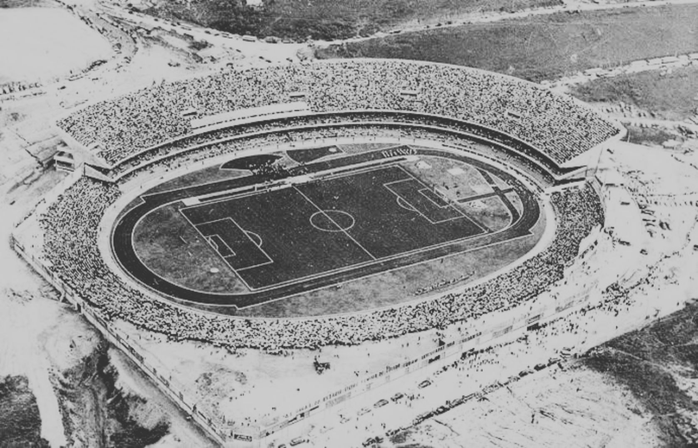
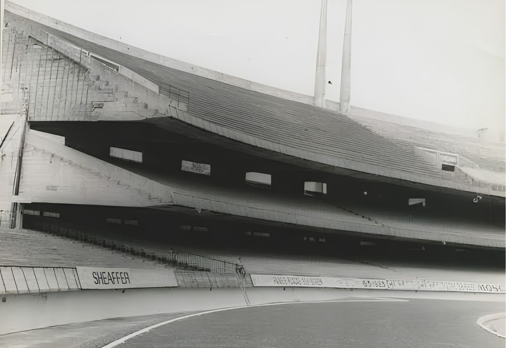

O início
O Estádio do Morumbi (oficialmente Estádio Cícero Pompeu de Toledo) teve o seu início oficial em 1952, quando o terreno foi doado em 4 de agosto daquele ano, e a sua construção começou em seguida.

O Estádio do Morumbi (oficialmente Estádio Cícero Pompeu de Toledo) teve o seu início oficial em 1952, quando o terreno foi doado em 4 de agosto daquele ano, e a sua construção começou em seguida.

Projetado pelo arquiteto João Batista Vilanova Artigas, o estádio foi erguido aos poucos, com recursos do próprio clube e da sua torcida. Em 2 de outubro de 1960 o Morumbi foi inaugurado, ainda inacabado, e só ficou completo em 1970.